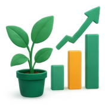

The impact we aim to create.
Amahirwe is a pilot project: this page describes what it's designed to achieve, not results it has already produced.
Student impact
Greater self-awareness
More students recognising strengths they may not have named before.
More exposure to opportunity
Easier access to scholarships, competitions and internships in their talent area.
Access to structured mentorship
A supervised, verified path to guidance from someone further along a similar path.
School impact
Better visibility
Clearer insight into student interests and where engagement is happening.
Better support
A clearer way to identify students who may need encouragement.
Easier connection to opportunity
A simpler bridge between the school and external mentors and providers.
Community impact
Stronger connections
Bringing young people and professionals in their community closer together.
Greater awareness of opportunity
Making it more visible what scholarships and programmes actually exist.
Long-term vision
Amahirwe starts with a focused pilot in rural public schools in Rwanda's Eastern Province. The SRS for this platform describes an architecture capable of expanding beyond that first pilot: the long-term goal of the ALCHE network is to build toward a model that can eventually grow across Africa. That expansion hasn't happened yet; it's the direction the project is designed to support.

Help this pilot become something worth expanding.
Whether as a school, a mentor or an opportunity provider, there's a way to get involved.